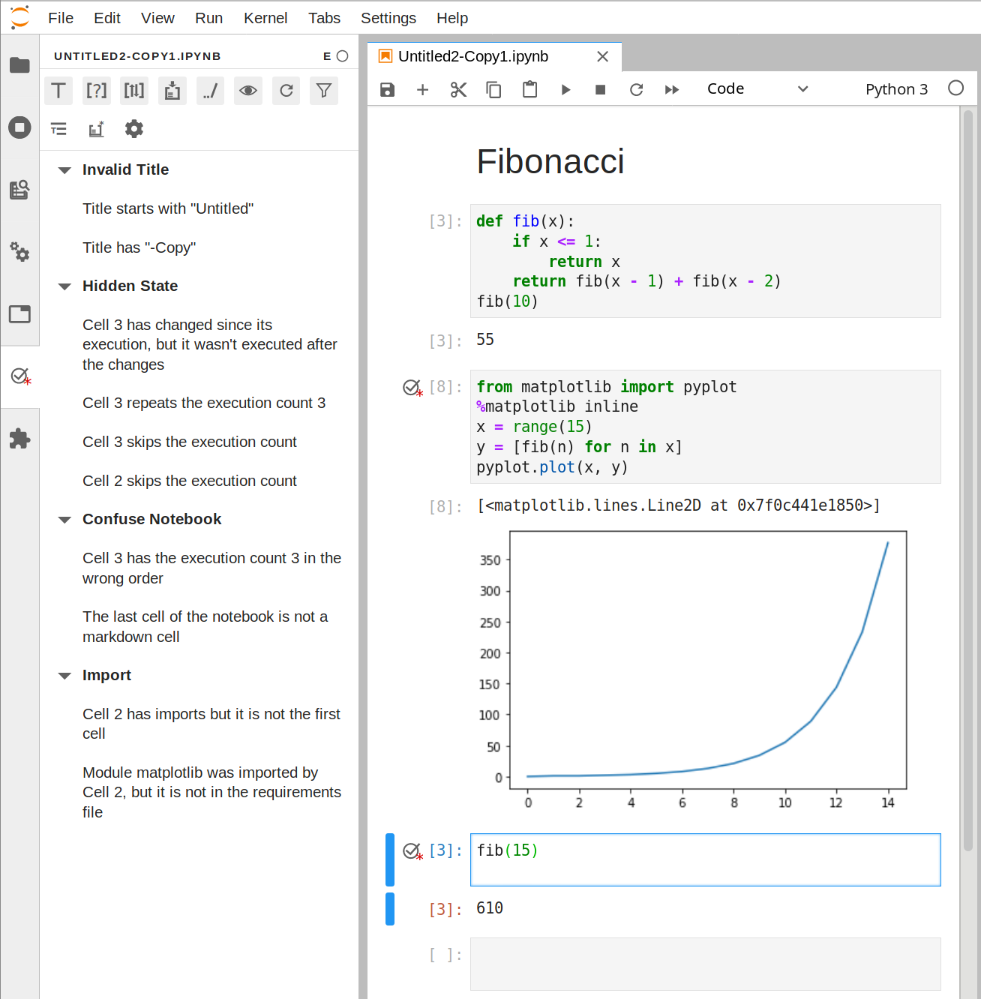

Julynter
Julynter is a linter for Jupyter Notebooks that aims at improving their Quality and Reproducibility based on the following guidelines [1]:
- Use short titles with a restrict charset (A-Z a-z 0-9 .-) for notebook files and markdown headings for more detailed ones in the body.
- Pay attention to the bottom of the notebook. Check whether it can benefit from descriptive markdown cells or can have code cells executed or removed.
- Abstract code into functions, classes, and modules and test them.
- Declare the dependencies in requirement files and pin the versions of all packages.
- Use a clean environment for testing the dependencies to check if all of them are declared.
- Put imports at the beginning of the notebooks.
- Use relative paths for accessing data in the repository.
- Re-run notebooks top to bottom before committing.

For installation and usage instructions, please check the repository
Authors
- João Felipe Pimentel (UFF)
- Leonardo Murta (UFF)
- Vanessa Braganholo (UFF)
- Juliana Freire (NYU)